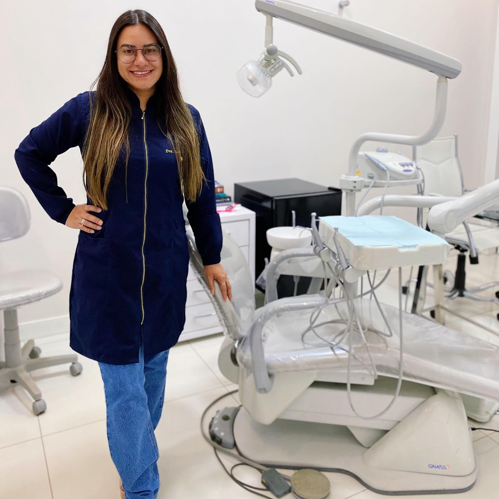

Odontologia pra toda a família em Irecê: do primeiro dentinho do seu filho ao seu tratamento, com prevenção, carinho e acompanhamento de verdade.
Dra. Lara Camila, CRO-BA 15.247, à frente de cada atendimento.
Clínica geral, ortodontia, endodontia e implantes na mesma casa.
Do primeiro dentinho em diante, no ritmo da criança.
Rua Réggio Emília, 210 E. Avaliações no Google
A gente sabe que a primeira vez no dentista pode dar um frio na barriga, tanto na criança quanto nos pais. Por isso ela acontece assim:
A criança conhece o espaço, a cadeira e os "instrumentos de astronauta". Nada acontece sem ela entender antes.
Contamos os dentinhos, olhamos como estão crescendo e conversamos, tudo no ritmo dela.
Limpeza suave, flúor quando indicado e orientação de escovação pra família levar pra casa.
Explicamos tudo com transparência, montamos o plano de cuidado e já deixamos o retorno combinado.
Vale pros adultos também: avaliação completa, sem julgamento, mesmo se você não vai ao dentista há anos. 😉

A Dra. Lara acredita que consultório de dentista pode ser um lugar leve, onde a criança entra curiosa e sai sorrindo, e o adulto é atendido com calma, sem pressa e sem julgamento.
Por isso a LCR trabalha com prevenção e acompanhamento de longo prazo: mais do que tratar, a gente caminha junto com a sua família pra evitar que o problema apareça.
Da primeira consulta do seu filho à reabilitação completa, sem precisar sair da clínica.
A estrela da casa: acompanhamento desde o primeiro dentinho, com consultas que a criança sai querendo voltar.
O check-up que mantém todo mundo longe de surpresa.
Especialistas de verdade, aqui dentro.
Pra voltar a mastigar e sorrir com conforto.
Não sabe por onde começar? Começa pela avaliação: a gente monta o plano com você.
Agendar avaliaçãoO que muda quando a clínica cuida de você no longo prazo, e não só quando dói.
Retornos e revisões combinados e lembrados. Prevenção só funciona com constância, e a constância é nossa responsabilidade também.
Clínica geral, orto, canal, próteses e implantes com equipe própria. Sua família não precisa peregrinar por consultórios.
Agendamento online em 1 minuto, atendimento de segunda a sexta e sábado com horário combinado.
Explicamos cada passo do tratamento com transparência, sem "dentistês": você decide sabendo o que está decidindo.
Escolha o horário online em 1 minuto, ou chama no WhatsApp que a gente encontra o melhor encaixe pra você.